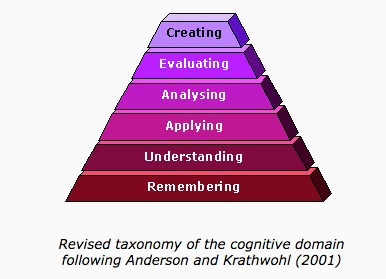
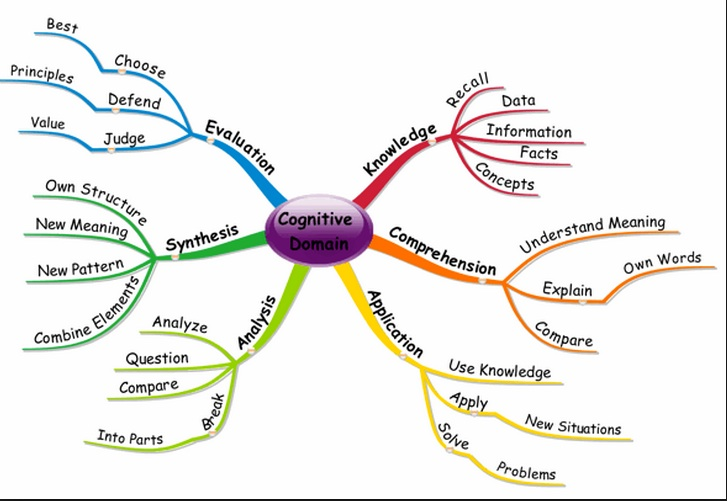
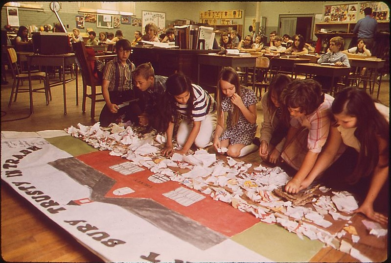
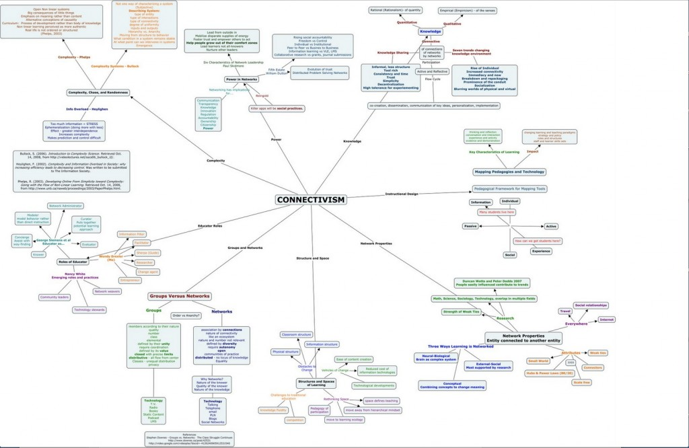

Chapter 2
Teaching in a Digital Age
In this chapter, I will be discussing different beliefs about the nature of knowledge, and how that influences teaching and learning.
In particular, this chapter covers the following topics:
Also in this chapter you will find the following activities:
List of characters.
Peter to Stephen. I think Caroline’s arrived. Now I know you’ve not met Caroline before, but for goodness sake, do try to be polite and sociable this time. The last time you were here, you hardly said a word.
Stephen. Well, nobody said anything that interested me. It was all about books and art. You know I’m not interested in that sort of thing.
Peter: Well, just try. Here she is. Caroline – lovely to see you again. Come and sit down. This is Stephen, my brother. I don’t think you’ve met, although I’ve told you about him – he’s a professor of mechanical engineering at the local university. But first, what would you like to drink?
Caroline. Hi, Stephen. No, I don’t think we have met. Nice to meet you. Peter, I’ll have a glass of white wine, please.
Peter. While you’re introducing yourselves, I’ll go and get the drinks and give Ruth a hand in the kitchen.
Stephen. Peter says you’re a writer. What do you write about?
Caroline (laughing). Well, you do like to get straight to the point, don’t you? It’s a bit difficult to answer your question. It depends on what I’m interested in at the time.
Stephen. And what are you interested in at the moment?
Caroline. I’m thinking about how someone would react to the loss of someone they love due to the action of someone else they also love deeply. It was prompted by an item on the news of how a father accidentally killed his two year old daughter by running her over when he was backing the car out of the garage. His wife had just let the girl out to play in the front garden and didn’t know her husband was getting the car out.
Stephen. God, that’s awful. I wonder why the hell he didn’t have a rear view video camera installed.
Caroline. Well, the horrible thing about it is that it could happen to anyone. That’s why I want to write something around such everyday tragedies.
Stephen. But how can you possibly write about something like that if you haven’t experienced that kind of thing yourself? Or have you?
Caroline. No, thank goodness. Well, I guess that’s the art of a writer – the ability to embed yourself in other people’s worlds, and to anticipate their feelings, emotions and consequent actions.
Stephen. But wouldn’t you need a degree in psychology or experience as a grief counsellor to do that in that situation?
Caroline. Well, I might talk to people who’ve undergone similar kinds of family tragedies, to see what kind of people they are afterwards, but basically it’s about understanding how I might react in such a situation and projecting that and modifying that according to the kind of characters I’m interested in.
Stephen. But how do you know it would be true, that people really would react the way you think they would?
Caroline. Well, what is ‘truth’ in a situation like that? Different people are likely to act differently. That’s what I want to explore in the novel. The husband reacts one way, the wife another, and then there’s the interaction between the two, and all those round them. I’m particularly interested in whether they could actually grow and become better people, or whether they disintegrate and destroy each other.
Stephen. But how can you not know that before you start?
Caroline. Well, that’s the point, really. I don’t. I want the characters to grow in my imagination, and the outcome will inevitably be determined by that.
Stephen. But if you don’t know the truth, how those two people actually responded to that tragedy, how can you help them or others like them?
Caroline. But I’m a novelist, not a therapist. I’m not attempting to help anyone in such an awful situation. I’m trying to understand the general human condition, and to do that, I have to start with myself, what I know and feel, and project that into another context.
Stephen. But that’s nonsense. How can you possibly understand the human condition just by looking inwards at yourself, and making up a fictional situation, that probably has nothing to do with what actually happened?
Caroline (sighs). Stephen, you’re a typical bloody scientist, with no imagination.
Peter (arriving with the drinks). Well, how are you two getting along?
Obviously at this point, not very well. The problem is that they have different world views on truth and how it can be reached. They start from very different views about what constitutes knowledge, how knowledge is acquired, and how it is validated. As always, the ancient Greeks had a word for thinking about the nature of knowledge: epistemology. We shall see that this is an important driver of how we teach.
All teaching is a mix of art and science. It is an art because any teacher or instructor is faced with numerous and constantly changing variables, which require rapid judgement and decision-making. Good teachers usually have a passion for teaching so the emotional as well as the cognitive side is important. In many cases, it’s also about personal relationships, the extent to which an instructor can empathise with students or appreciate their difficulties in learning, and the extent to which the instructor can communicate effectively.
There is also a science of teaching, based on theory and research. We shall see in fact there are many, often conflicting theories, driven primarily by epistemological differences about the nature of knowledge, and by different value systems. Then over the last 100 years there has been a great deal of empirical research into how students learn, and effective teaching methods, which at its best is driven by a strong, explicit theoretical base, and at its worse by mindless data-collection (rankings, anyone?).
As well as research-based practices, there are what are known as best practices, based on teachers’ experience of teaching. While in many cases these have been validated by research or are driven by theories of learning, this is not always the case. As a result, what some people see as best practices are not always universally shared by others, even if best practices are seen in general as current accepted wisdom. Lectures are a good example. In Chapter 3, Section 3, strong evidence is provided that lectures have many limitations, yet many instructors still believe that this is the most appropriate way to teach their subject.
However, even the most extensively trained teachers don’t always make good teachers if they don’t have the talent and emotional connection with learners, and untrained teachers (which covers virtually all university instructors), sometimes succeed, even with little experience, because they have a knack or in-born talent. However, although such instructors are often held up as the triumph of art over science in teaching, they are in practice very rare. Many of these untutored, brilliant instructors have learned rapidly on the job by trial and error, with the inevitable casualties along the way.
For all these reasons, there is no one best way to teach that will fit all circumstances, which is why arguments over ‘modern’ or ‘traditional’ approaches to teaching reading or math, for example, are often so sterile. Good teachers usually have an arsenal of tools, methods and approaches that they can draw on, depending on the circumstances. Also teachers and instructors will differ over what constitutes good teaching, depending on their understandings of what knowledge is, what matters most in learning, and their priorities in terms of desirable learning outcomes.
Nevertheless, these apparent contradictions do not mean that we cannot develop guidelines and techniques to improve the quality of teaching, or that we have no principles or evidence on which to base decisions about teaching, even in a rapidly changing digital age. The aim of this book is to provide such guidelines, while recognizing that one size will not fit all, and that every teacher or instructor will need to select and adapt the suggestions in this book to their own unique context. For this approach to work, though, we need to explore some fundamental issues about teaching and learning, some of which are rarely addressed in everyday discussions about education. The first and probably most important is epistemology.
In the dinner party scenario, Stephen and Caroline had quite different beliefs about the nature of knowledge. The issue here is not who was right, but that we all have implicit beliefs about the nature of knowledge, what constitutes truth, how that truth is best validated, and, from a teaching perspective, how best to help people to acquire that knowledge. The basis of that belief will vary, depending on the subject matter, and, in some areas, such as social sciences, even within a common domain of knowledge. It will become clear that our choice of teaching approaches and even the use of technology are absolutely dependent on beliefs and assumptions we have about the nature of knowledge, about the requirements of our subject discipline, and about how we think students learn. We will also see that there are some common, shared beliefs about academic knowledge that transcend disciplinary boundaries, but which separate academic knowledge from general, ‘every day’ knowledge.
The way we teach in higher education will be driven primarily by our beliefs or even more importantly, by the commonly agreed consensus within an academic discipline about what constitutes valid knowledge in the subject area. The nature of knowledge centres on the question of how we know what we know. What makes us believe that something is ‘true’? Questions of this kind are epistemological in nature. Hofer and Pintrich (1997) state:
‘Epistemology is a branch of philosophy concerned with the nature and justification of knowledge.’
The famous argument at the British Association in 1860 between Thomas Huxley and the Bishop of Oxford, Samuel Wilberforce, over the origin of species is a classic example of the clash between beliefs about the foundations of knowledge. Wilberforce argued that Man was created by God; Huxley argued that Man evolved through natural selection. Bishop Wilberforce believed he was right because ‘true’ knowledge was determined through faith and interpretation of holy scripture; Professor Huxley believed he was right because ‘true’ knowledge was derived through empirical science and rational skepticism.
An important part of higher education is aimed at developing students’ understanding, within a particular discipline, of the criteria and values that underpin academic study of that discipline, and these include questions of what constitutes valid knowledge in that subject area. For many experts in a particular field, these assumptions are often so strong and embedded that the experts may not even be openly conscious of them unless challenged. But for novices, such as students, it often takes a great deal of time to understand fully the underlying value systems that drive choice of content and methods of teaching.
Our epistemological position therefore has direct practical consequences for how we teach.
Most teachers in the school/k-12 sector will be familiar with the main theories of learning, but because instructors in post-secondary education are hired primarily for their subject experience, or research or vocational skills, it is essential to introduce and discuss, if only briefly, these main theories. In practice, even without formal training or knowledge of different theories of learning, all teachers and instructors will approach teaching within one of these main theoretical approaches, whether or not they are aware of the educational jargon surrounding these approaches. Also, as online learning, technology-based teaching, and informal digital networks of learners have evolved, new theories of learning are emerging.
With a knowledge of alternative theoretical approaches, teachers and instructors are in a better position to make choices about how to approach their teaching in ways that will best fit the perceived needs of their students, within the very many different learning contexts that teachers and instructors face. This is particularly important when addressing many of the requirements of learners in a digital age that are set out in Chapter 1. Furthermore, the choice of or preference for one particular theoretical approach will have major implications for the way that technology is used to support teaching.
In fact, there is a huge amount of literature on theories of learning, and I am aware that the treatment here is cursory, to say the least. Those who would prefer a more detailed introduction to theories of learning could, for an obscene price, purchase Schunk (2011), or for a more reasonable price Harasim (2012). The aim of my book though is not to be comprehensive in terms of in-depth coverage of all learning theories, but to provide a basis on which to suggest and evaluate different ways of teaching to meet the diverse needs of learners in a digital age.
In the following sections I examine four of the most common theories of learning, and the underlying epistemologies that drive them.
Harasim, L. (2012) Learning Theory and Online Technologies New York/London: Routledge
Hofer, B. and Pintrich, P. (1997) ‘The development of epistemological theories: beliefs about knowledge and knowing and their relation to learning’ Review of Educational Research Vol. 67, No. 1, pp. 88-140
Schunk, D. (2011) Learning Theories: An Educational Perspective Boston MA: Allyn and Bacon
Objectivists believe that there exists an objective and reliable set of facts, principles and theories that either have been discovered and delineated or will be over the course of time. This position is linked to the belief that truth exists outside the human mind, or independently of what an individual may or may not believe. Thus the laws of physics are constant, although our knowledge of them may evolve as we discover the ‘truth’ out there.
A teacher operating from a primarily objectivist view is more likely to believe that a course must present a body of knowledge to be learned. This may consist of facts, formulas, terminology, principles, theories and the like.
The effective transmission of this body of knowledge becomes of central importance. Lectures and textbooks must be authoritative, informative, organized, and clear. The student’s responsibility is accurately to comprehend, reproduce and add to the knowledge handed down to him or her, within the guiding epistemological framework of the discipline, based on empirical evidence and the testing of hypotheses. Course assignments and exams would require students to find ‘right answers’ and justify them. Original or creative thinking must still operate within the standards of an objectivist approach – in other words, new knowledge development must meet the rigorous standards of empirical testing within agreed theoretical frameworks.
An ‘objectivist’ teacher has to be very much in control of what and how students learn, choosing what is important to learn, the sequence, the learning activities, and how learners are to be assessed.
Although initially developed in the 1920s, behaviourism still dominates approaches to teaching and learning in many places, particularly in the USA. Behaviourist psychology is an attempt to model the study of human behaviour on the methods of the physical sciences, and therefore concentrates attention on those aspects of behaviour that are capable of direct observation and measurement. At the heart of behaviourism is the idea that certain behavioural responses become associated in a mechanistic and invariant way with specific stimuli. Thus a certain stimulus will evoke a particular response. At its simplest, it may be a purely physiological reflex action, like the contraction of an iris in the eye when stimulated by bright light.
However, most human behaviour is more complex. Nevertheless behaviourists have demonstrated in labs that it is possible to reinforce through reward or punishment the association between any particular stimulus or event and a particular behavioural response. The bond formed between a stimulus and response will depend on the existence of an appropriate means of reinforcement at the time of association between stimulus and response. This depends on random behaviour (trial and error) being appropriately reinforced as it occurs.
This is essentially the concept of operant conditioning, a principle most clearly developed by Skinner (1968). He showed that pigeons could be trained in quite complex behaviour by rewarding particular, desired responses that might initially occur at random, with appropriate stimuli, such as the provision of food pellets. He also found that a chain of responses could be developed, without the need for intervening stimuli to be present, thus linking an initially remote stimulus with a more complex behaviour. Furthermore, inappropriate or previously learned behaviour could be extinguished by withdrawing reinforcement. Reinforcement in humans can be quite simple, such as immediate feedback for an activity or getting a correct answer to a multiple-choice test.
You can see a fascinating five minute film of B.F. Skinner describing his teaching machine in a 1954 film captured on YouTube, either by clicking on the picture above or at: http://www.youtube.com/watch?v=jTH3ob1IRFo
Underlying a behaviourist approach to teaching is the belief that learning is governed by invariant principles, and these principles are independent of conscious control on the part of the learner. Behaviourists attempt to maintain a high degree of objectivity in the way they view human activity, and they generally reject reference to unmeasurable states, such as feelings, attitudes, and consciousness. Human behaviour is above all seen as predictable and controllable. Behaviourism thus stems from a strongly objectivist epistemological position.
Skinner’s theory of learning provides the underlying theoretical basis for the development of teaching machines, measurable learning objectives, computer-assisted instruction, and multiple choice tests. Behaviourism’s influence is still strong in corporate and military training, and in some areas of science, engineering, and medical training. It can be of particular value for rote learning of facts or standard procedures such as multiplication tables, for dealing with children or adults with limited cognitive ability due to brain disorders, or for compliance with industrial or business standards or processes that are invariant and do not require individual judgement.
Behaviourism, with its emphasis on rewards and punishment as drivers of learning, and on pre-defined and measurable outcomes, is the basis of populist conceptions of learning among many parents, politicians, and, it should be noted, computer scientists interested in automating learning. It is not surprising then that there has also been a tendency until recently to see technology, and in particular computer-aided instruction, as being closely associated with behaviourist approaches to learning, although we shall see in Chapter 5, Section 4 that computers do not necessarily have to be used in a behaviourist way.
Lastly, although behaviourism is an ‘objectivist’ approach to teaching, it is not the only way of teaching ‘objectively’. For instance, problem-based learning can still take a highly objective approach to knowledge and learning.
Skinner, B. (1968) The Technology of Teaching, 1968. New York: Appleton-Century-Crofts
An obvious criticism of behaviourism is that it treats humans as a black box, where inputs into the black box, and outputs from the black box, are known and measurable, but what goes on inside the black box is ignored or not considered of interest. However, humans have the ability for conscious thought, decision-making, emotions, and the ability to express ideas through social discourse, all of which are highly significant for learning. Thus we will likely get a better understanding of learning if we try to find out what goes on inside the black box.
Cognitivists therefore have focused on identifying mental processes – internal and conscious representations of the world – that they consider are essential for human learning. Fontana (1981) summarises the cognitive approach to learning as follows:
‘The cognitive approach … holds that if we are to understand learning we cannot confine ourselves to observable behaviour, but must also concern ourselves with the learner’s ability mentally to re-organize his psychological field (i.e. his inner world of concepts, memories, etc.) in response to experience. This latter approach therefore lays stress not only on the environment, but upon the way in which the individual interprets and tries to make sense of the environment. It sees the individual not as the somewhat mechanical product of his environment, but as an active agent in the learning process, deliberately trying to process and categorize the stream of information fed into him by the external world.’ (p. 148)
Thus the search for rules, principles or relationships in processing new information, and the search for meaning and consistency in reconciling new information with previous knowledge, are key concepts in cognitive psychology. Cognitive psychology is concerned with identifying and describing mental processes that affect learning, thinking and behaviour, and the conditions that influence those mental processes.
The most widely used theories of cognitivism in education are based on Bloom’s taxonomies of learning objectives (Bloom et al., 1956), which are related to the development of different kinds of learning skills, or ways of learning. Bloom and his colleagues claimed that there are three important domains of learning:
Cognitivism focuses on the ‘thinking’ domain. In more recent years, Anderson and Krathwol (2000) have slightly modified Bloom et al.’s original taxonomy, adding ‘creating’ new knowledge:

Bloom et al. also argued that there is a hierarchy of learning, meaning that learners need to progress through each of the levels, from remembering through to evaluating/creating. As psychologists delve deeper into each of these cognitive activities to understand the underlying mental processes, it becomes an increasingly reductionist exercise (see Figure 2.4.2 below).

Cognitive approaches to learning, with a focus on comprehension, abstraction, analysis, synthesis, generalization, evaluation, decision-making, problem-solving and creative thinking, seem to fit much better with higher education than behaviourism, but even in school/k-12 education, a cognitivist approach would mean for instance focusing on teaching learners how to learn, on developing stronger or new mental processes for future learning, and on developing deeper and constantly changing understanding of concepts and ideas.
Cognitive approaches to learning cover a very wide range. At the objectivist end, cognitivists consider basic mental processes to be genetic or hard-wired, but can be programmed or modified by external factors, such as new experiences. Early cognitivists in particular were interested in the concept of mind as computer, and more recently brain research has led to a search for linking cognition to the development and reinforcement of neural networks in the brain.
In terms of practice, this concept of mind as computer has led to several technology-based developments in teaching, including:
Cognitivists have increased our understanding of how humans process and make sense of new information, how we access, interpret, integrate, process, organize and manage knowledge, and have given us a better understanding of the conditions that affect learners’ mental states.
Anderson, L. and Krathwohl, D. (eds.) (2001). A Taxonomy for Learning, Teaching, and Assessing: A Revision of Bloom’s Taxonomy of Educational Objectives New York: Longman
Atherton J. S. (2013) Learning and Teaching; Bloom’s taxonomy, retrieved 18 March 2015
Bloom, B. S.; Engelhart, M. D.; Furst, E. J.; Hill, W. H.; Krathwohl, D. R. (1956). Taxonomy of educational objectives: The classification of educational goals. Handbook I: Cognitive domain. New York: David McKay Company
Fontana, D. (1981) Psychology for Teachers London: Macmillan/British Psychological Society

Both behaviourist and some elements of cognitive theories of learning are deterministic, in the sense that behaviour and learning are believed to be rule-based and operate under predictable and constant conditions over which the individual learner has no or little control. However, constructivists emphasise the importance of consciousness, free will and social influences on learning. Carl Rogers (1969) stated that:
‘every individual exists in a continually changing world of experience in which he is the center.’
The external world is interpreted within the context of that private world. The belief that humans are essentially active, free and strive for meaning in personal terms has been around for a long time, and is an essential component of constructivism.
Constructivists believe that knowledge is essentially subjective in nature, constructed from our perceptions and mutually agreed upon conventions. According to this view, we construct new knowledge rather than simply acquire it via memorization or through transmission from those who know to those who don’t know. Constructivists believe that meaning or understanding is achieved by assimilating information, relating it to our existing knowledge, and cognitively processing it (in other words, thinking or reflecting on new information). Social constructivists believe that this process works best through discussion and social interaction, allowing us to test and challenge our own understandings with those of others. For a constructivist, even physical laws exist because they have been constructed by people from evidence, observation, and deductive or intuitive thinking, and, most importantly, because certain communities of people (in this example, scientists) have mutually agreed what constitutes valid knowledge.
Constructivists argue that individuals consciously strive for meaning to make sense of their environment in terms of past experience and their present state. It is an attempt to create order in their minds out of disorder, to resolve incongruities, and to reconcile external realities with prior experience. The means by which this is done are complex and multi-faceted, from personal reflection, seeking new information, to testing ideas through social contact with others. Problems are resolved, and incongruities sorted out, through strategies such as seeking relationships between what was known and what is new, identifying similarities and differences, and testing hypotheses or assumptions. Reality is always tentative and dynamic.
One consequence of constructivist theory is that each individual is unique, because the interaction of their different experiences, and their search for personal meaning, results in each person being different from anyone else. Thus behaviour is not predictable or deterministic, at least not at the individual level (which is a key distinguishing feature from cognitivism, which seeks general rules of thinking that apply to all humans). The key point here is that for constructivists, learning is seen as essentially a social process, requiring communication between learner, teacher and others. This social process cannot effectively be replaced by technology, although technology may facilitate it.
For many educators, the social context of learning is critical. Ideas are tested not just on the teacher, but with fellow students, friends and colleagues. Furthermore, knowledge is mainly acquired through social processes or institutions that are socially constructed: schools, universities, and increasingly these days, online communities. Thus what is taken to be ‘valued’ knowledge is also socially constructed.
Constructivists believe that learning is a constantly dynamic process. Understanding of concepts or principles develops and becomes deeper over time. For instance, as a very young child, we understand the concept of heat through touch. As we get older we realise that it can be quantified, such as minus 20 centigrade being very cold (unless you live in Manitoba, where -20C would be considered normal). As we study science, we begin to understand heat differently, for instance, as a form of energy transfer, then as a form of energy associated with the motion of atoms or molecules. Each ‘new’ component needs to be integrated with prior understandings and also integrated with other related concepts, including other components of molecular physics and chemistry.
Thus ‘constructivist’ teachers place a strong emphasis on learners developing personal meaning through reflection, analysis and the gradual building of layers or depths of knowledge through conscious and ongoing mental processing. Reflection, seminars, discussion forums, small group work, and projects are key methods used to support constructivist learning in campus-based teaching (discussed in more detail in Chapter 3), and online collaborative learning, and communities of practice are important constructivist methods in online learning (Chapter 4).
Although problem-solving can be approached in an objectivist way, by pre-determining a set of steps or processes to go through pre-determined by ‘experts’, it can also be approached in a constructivist manner. The level of teacher guidance can vary in a constructivist approach to problem-solving, from none at all, to providing some guidelines on how to solve the problem, to directing students to possible sources of information that may be relevant to solving that problem, to getting students to brainstorm particular solutions. Students will probably work in groups, help each other and compare solutions to the problem. There may not be considered one ‘correct’ solution to the problem, but the group may consider some solutions better than others, depending on the agreed criteria of success for solving the problem.
It can be seen that there can be ‘degrees’ of constructivism, since in practice the teacher may well act as first among equals, and help direct the process so that ‘suitable’ outcomes are achieved. The fundamental difference is that students have to work towards constructing their own meaning, testing it against ‘reality’, and further constructing meaning as a result.
Constructivists also approach technology for teaching differently from behaviourists. From a constructivist perspective, brains have more plasticity, adaptability and complexity than current computer software programs. Other uniquely human factors, such as emotion, motivation, free will, values, and a wider range of senses, make human learning very different from the way computers operate. Following this reasoning, education would be much better served if computer scientists tried to make software to support learning more reflective of the way human learning operates, rather than trying to fit human learning into the current restrictions of behaviourist computer programming. This will be discussed in more detail in Chapter 5, Section 4.
Although constructivist approaches can be and have been applied to all fields of knowledge, they are more commonly found in approaches to teaching in the humanities, social sciences, education, and other less quantitative subject areas.
Rogers, C. (1969) Freedom to Learn Columbus, OH: Charles E. Merrill Publishing Co.
There are many books on constructivism but some of the best are the original works of some of the early educators and researchers, in particular:
Piaget, J. and Inhelder, B., (1958) The Growth of Logical Thinking from Childhood to Adolescence New York: Basic Books, 1958
Searle, J. (1996) The construction of social reality. New York: Simon & Shuster
Vygotsky, L. (1978) Mind in Society: Development of Higher Psychological Processes Cambridge MA: Harvard University Press
Another epistemological position, connectivism, has emerged in recent years that is particularly relevant to a digital society. Connectivism is still being refined and developed, and it is currently highly controversial, with many critics.
In connectivism it is the collective connections between all the ‘nodes’ in a network that result in new forms of knowledge. According to Siemens (2004), knowledge is created beyond the level of individual human participants, and is constantly shifting and changing. Knowledge in networks is not controlled or created by any formal organization, although organizations can and should ‘plug in’ to this world of constant information flow, and draw meaning from it. Knowledge in connectivism is a chaotic, shifting phenomenon as nodes come and go and as information flows across networks that themselves are inter-connected with myriad other networks.
The significance of connectivism is that its proponents argue that the Internet changes the essential nature of knowledge. ‘The pipe is more important than the content within the pipe,’ to quote Siemens again.
Downes (2007) makes a clear distinction between constructivism and connectivism:
‘In connectivism, a phrase like “constructing meaning” makes no sense. Connections form naturally, through a process of association, and are not “constructed” through some sort of intentional action. …Hence, in connectivism, there is no real concept of transferring knowledge, making knowledge, or building knowledge. Rather, the activities we undertake when we conduct practices in order to learn are more like growing or developing ourselves and our society in certain (connected) ways.’

For Siemens (2004), it is the connections and the way information flows that result in knowledge existing beyond the individual. Learning becomes the ability to tap into significant flows of information, and to follow those flows that are significant. He argues that:
‘Connectivism presents a model of learning that acknowledges the tectonic shifts in society where learning is no longer an internal, individualistic activity….Learning (defined as actionable knowledge) can reside outside of ourselves (within an organization or a database).’
Siemens (2004) identifies the principles of connectivism as follows:
Downes (2007) states that:
‘at its heart, connectivism is the thesis that knowledge is distributed across a network of connections, and therefore that learning consists of the ability to construct and traverse those networks….[Connectivism] implies a pedagogy that:
(a) seeks to describe ‘successful’ networks (as identified by their properties, which I have characterized as diversity, autonomy, openness, and connectivity) and
(b) seeks to describe the practices that lead to such networks, both in the individual and in society – which I have characterized as modelling and demonstration (on the part of a teacher) – and practice and reflection (on the part of a learner).
Siemens, Downes and Cormier constructed the first massive open online course (MOOC), Connectivism and Connective Knowledge 2011, partly to explain and partly to model a connectivist approach to learning.
Connectivists such as Siemens and Downes tend to be somewhat vague about the role of teachers or instructors, as the focus of connectivism is more on individual participants, networks and the flow of information and the new forms of knowledge that result. The main purpose of a teacher appears to be to provide the initial learning environment and context that brings learners together, and to help learners construct their own personal learning environments that enable them to connect to ‘successful’ networks, with the assumption that learning will automatically occur as a result, through exposure to the flow of information and the individual’s autonomous reflection on its meaning. There is no need for formal institutions to support this kind of learning, especially since such learning often depends heavily on social media readily available to all participants.
There are numerous criticisms of the connectivist approach to teaching and learning (see Chapter 6, Section 4). Some of these criticisms may be overcome as practice improves, as new tools for assessment, and for organizing co-operative and collaborative work with massive numbers, are developed, and as more experience is gained. More importantly, connectivism is really the first theoretical attempt to radically re-examine the implications for learning of the Internet and the explosion of new communications technologies.
AlDahdouh, A., Osório, A., Caires, S. (2015) Understanding knowledge network, learning and connectivism, International Journal of Instructional Technology and Distance Learning, Vol. 12, No.10
Downes, S. (2007) What connectivism is Half An Hour, February 3
Downes, S. (2014) The MOOC of One, Stephen’s Web, March 10
Siemens, G. (2004) ‘Connectivism: a theory for the digital age’ eLearningSpace, December 12.
Before moving on to the more pragmatic elements of teaching in a digital age, it is necessary to address the question of whether the development of digital technologies has actually changed the nature of knowledge, because if that is the case, then this will influence strongly what needs to be taught as well as how it will be taught.
Connectivists such as Siemens and Downes argue that the Internet has changed the nature of knowledge. They argue that ‘important’ or ‘valid’ knowledge now is different from prior forms of knowledge, particularly academic knowledge. Downes (2007) has argued that new technologies allow for the de-institutionalisation of learning. Chris Anderson, the editor of Wired Magazine and now CEO of Ted Talks, has argued (2008) that massive meta-data correlations can replace ‘traditional’ scientific approaches to creating new knowledge:
Google’s founding philosophy is that we don’t know why this page is better than that one: If the statistics of incoming links say it is, that’s good enough. No semantic or causal analysis is required. …This is a world where massive amounts of data and applied mathematics replace every other tool that might be brought to bear. Out with every theory of human behavior, from linguistics to sociology. Forget taxonomy, ontology, and psychology. Who knows why people do what they do? The point is they do it, and we can track and measure it with unprecedented fidelity. With enough data, the numbers speak for themselves.
The big target here isn’t advertising, though. It’s science. The scientific method is built around testable hypotheses. These models, for the most part, are systems visualized in the minds of scientists. The models are then tested, and experiments confirm or falsify theoretical models of how the world works. This is the way science has worked for hundreds of years. Scientists are trained to recognize that correlation is not causation, that no conclusions should be drawn simply on the basis of correlation between X and Y (it could just be a coincidence). Instead, you must understand the underlying mechanisms that connect the two. Once you have a model, you can connect the data sets with confidence. Data without a model is just noise. But faced with massive data, this approach to science — hypothesize, model, test — is becoming obsolete.’
(It should be noted this was written before derivative-based investments caused financial markets to collapse, mainly because those using them didn’t understand the underlying logic that created the data.)
Jane Gilbert’s book, ‘Catching the Knowledge Wave’ (2005), directly addresses the assumption that the nature of knowledge is changing. Drawing on publications by Manuel Castells (2000) and Jean-François Lyotard (1984), she writes (p. 35):
‘Castells says that…knowledge is not an object but a series of networks and flows…the new knowledge is a process not a product…it is produced not in the minds of individuals but in the interactions between people…..
According to Lyotard, the traditional idea that acquiring knowledge trains the mind would become obsolete, as would the idea of knowledge as a set of universal truths. Instead, there will be many truths, many knowledges and many forms of reason. As a result… the boundaries between traditional disciplines are dissolving, traditional methods of representing knowledge (books, academic papers, and so on) are becoming less important, and the role of traditional academics or experts are undergoing major change.’
Back in the 1960s Marshal McLuhan argued that the medium is the message; the way information is represented and transmitted is changed and so is our focus and understanding as information moves between and within different media. If information and knowledge are now represented and more significantly now flow differently, how does that affect educational processes such as teaching and learning?
One way knowledge is certainly changing is in the way it is represented. It should be remembered that Socrates criticised writing because it could not lead to ‘true’ knowledge which came only from verbal dialogue and oratory. Writing however is important because it provides a permanent record of knowledge. The printing press was important because it enabled the written word to spread to many more people. As a consequence, scholars could challenge and better interpret, through reflection, what others had written, and more accurately and carefully argue their own positions. Many scholars believe that one consequence of the development of mass printing was the Renaissance and the age of enlightenment, and modern academia consequently came to depend very heavily on the print medium.
Now we have other ways to record and transmit knowledge that can be studied and reflected upon, such as video, audio, animations, and graphics, and the Internet does expand enormously the speed and range by which these representations of knowledge can be transmitted. We shall also see in Chapter 8 and Chapter 9 that that media are not neutral, but represent meaning in different ways.
All the above authors agree that the ‘new’ knowledge in the knowledge society is about the commercialisation or commodification of knowledge: ‘it is defined not through what it is, but through what it can do.’ (Gilbert, p.35). ‘The capacity to own, buy and sell knowledge has contributed, in major ways, to the development of the new, knowledge-based societies.’ (p.39)
In a knowledge-based society, particular emphasis is placed on the utility of knowledge for commercial purposes. As a result there is more emphasis on certain types of immediately practical knowledge over longer term research, for instance, but because of the strong relationship between pure and applied knowledge, this is probably a mistake, even in terms of economic development.
The issue is not so much the nature of knowledge, but how students or learners come to acquire that knowledge and learn how it can be used. As I argued in Chapter 1, this requires more emphasis on developing and learning skills of how best to apply knowledge, rather than a focus on merely teaching content. Also it will be argued later in the book that students have many more sources of information besides the teacher or instructor and that a key educational issue is the management of vast amounts of knowledge. Since knowledge is dynamic, expanding and constantly changing, learners need to develop the skills and learn to use the tools that will enable them to continue to learn.
But does this mean that knowledge itself is now different? I will argue that in a digital age, some aspects of knowledge do change considerably, but others do not, at least in essence. In particular, I argue that academic knowledge, in terms of its values and goals, does not and should not change a great deal, but the way it is represented and applied will and should change.
Academic knowledge is a specific form of knowledge that has characteristics that differentiate it from other kinds of knowledge, and particularly from knowledge or beliefs based solely on direct personal experience. In summary, academic knowledge is a second-order form of knowledge that seeks abstractions and generalizations based on reasoning and evidence.
Fundamental components of academic knowledge are
Transparency means that the source of the knowledge can be traced and verified. Codification means that the knowledge can be consistently represented in some form (words, symbols, video) that enables interpretation by someone other than the originator. Knowledge can be reproduced or have multiple copies. Lastly, knowledge must be in a form such that it can be communicated and challenged by others.
Laurillard (2001) recognizes the importance of relating the student’s direct experience of the world to an understanding of academic concepts and processes, but she argues that teaching at a university level must go beyond direct experience to reflection, analysis and explanations of those direct experiences. Because every academic discipline has a specific set of conventions and assumptions about the nature of knowledge within its discipline, students in higher education need to change the perspectives of their everyday experience to match those of the subject domain.
As a result, Laurillard argues that university teaching is ‘essentially a rhetorical activity, persuading students to change the way they experience the world’ (p.28). Laurillard then goes on to make the point that because academic knowledge has this second-order character, it relies heavily on symbolic representation, such as language, mathematical symbols, ‘or any symbol system that can represent a description of the world, and requires interpretation’ (p.27) to enable this mediation to take place.
If academic knowledge requires mediation, then this has major significance for the use of technology. Language (i.e. reading and speaking) is only one channel for mediating knowledge. Media such as video, audio, and computing can also provide teachers with alternative channels of mediation.
Laurillard’s reflections on the nature of academic knowledge are a counter-balance to the view that students can automatically construct knowledge through argument and discussion with their peers, or self-directed study, or the wisdom of the crowd. For academic knowledge, the role of the teacher is to help students understand not just the facts or concepts in a subject discipline, but the rules and conventions for acquiring and validating knowledge within that subject discipline. Academic knowledge shares common values or criteria, making academic knowledge itself a particular epistemological approach.
In a knowledge-based society, knowledge that leads to innovation and commercial activity is now recognised as critical to economic development. Again, there is a tendency to argue that this kind of knowledge – ‘commercial’ knowledge – is different from academic knowledge. I would argue that sometimes it is and sometimes it isn’t.
I have no argument with the point of view that knowledge is the driver of most modern economies, and that this represents a major shift from the ‘old’ industrial economy, where natural resources (coal, oil, iron), machinery and cheap manual labour were the predominant drivers. I do though challenge the idea that the nature of knowledge has undergone radical changes.
The difficulty I have with the broad generalisations about the changing nature of knowledge is that there have always been different kinds of knowledge. One of my first jobs was in a brewery in the East End of London in 1959. I was one of several students hired during our summer vacation. One of my fellow student workers was a brilliant mathematician. Every lunch hour the regular brewery workers played cards (three card brag) for what seemed to us large sums of money, but they would never let us play with them. My student friend was desperate to get a game, and eventually, on our last week, they let him in. They promptly won all his wages. He knew the numbers and the odds, but there was still a lot of non-academic knowledge he didn’t know about playing cards for money, especially against a group of friends playing together rather than against each other. Gilbert’s point is that academic knowledge has always been more highly valued in education than ‘everyday’ knowledge. However, in the ‘real’ world, all kinds of knowledge are valued, depending on the context. Thus while beliefs about what constitutes ‘important’ knowledge may be changing, this does not mean that the nature of academic knowledge is changing.
Gilbert argues that in a knowledge society, there has been a shift in valuing applied knowledge over academic knowledge in the broader society, but this has not been recognised or accepted in education (and particularly the school system). She sees academic knowledge as associated with narrow disciplines such as mathematics and philosophy, whereas applied knowledge is knowing how to do things, and hence by definition tends to be multi-disciplinary. Gilbert argues (p. 159-160) that academic knowledge is:
‘authoritative, objective, and universal knowledge. It is abstract, rigorous, timeless – and difficult. It is knowledge that goes beyond the here and now knowledge of everyday experience to a higher plane of understanding…..In contrast, applied knowledge is practical knowledge that is produced by putting academic knowledge into practice. It is gained through experience, by trying things out until they work in real-world situations.’
Other kinds of knowledge that don’t fit the definition of academic knowledge are those kinds built on experience, traditional crafts, trail-and-error, and quality improvement through continuous minor change built on front-line worker experience – not to mention how to win at three card brag.
I agree that academic knowledge is different from everyday knowledge, but I challenge the view that academic knowledge is ‘pure’, not applied. It is too narrow a definition, because it thus excludes all the professional schools and disciplines, such as engineering, medicine, law, business, education that ‘apply’ academic knowledge. These are just as accepted and ‘valued’ parts of universities and colleges as the ‘pure’ disciplines of humanities and science, and their activities meet all the criteria for academic knowledge set out by Gilbert.
Making a distinction between academic and applied knowledge misses the real point about the kind of education needed in a knowledge society and a digital age. It is not just knowledge – both pure and applied – that is important, but also digital literacy, skills associated with lifelong learning, and attitudes/ethics and social behaviour.
Knowledge is not just ‘stuff’, or fixed content, but it is dynamic. Knowledge is also not just ‘flow’. Content or ‘stuff’ does matter as well as the discussions or interpretations we have about content. Where does the ‘stuff’ come from that ebbs and flows over the discussions on the internet? It may not originate or end in the heads of individuals, but it certainly flows though them, where it is interpreted and transformed. Knowledge may be dynamic and changing, but at some point each person does settle, if only for a brief time, on what they think knowledge to be, even if over time that knowledge changes, develops or becomes more deeply understood. Thus ‘stuff’ or content does matter, though knowing (a) how to acquire content and (b) what to do with content we have acquired, is even more important.
Thus it is not sufficient just to teach academic content (applied or not). It is equally important also to enable students to develop the ability to know how to find, analyse, organise and apply information/content within their professional and personal activities, to take responsibility for their own learning, and to be flexible and adaptable in developing new knowledge and skills. All this is needed because of the explosion in the quantity of knowledge in any professional field that makes it impossible to memorise or even be aware of all the developments that are happening in the field, and the need to keep up-to-date within the field after graduating.
To do this learners must have access to appropriate and relevant content, know how to find it, and must have opportunities to apply and practice what they have learned. Thus learning has to be a combination of content, skills and attitudes, and increasingly this needs to apply to all areas of study. This does not mean that there is no room to search for universal truths, or fundamental laws or principles, but this needs to be embedded within a broader learning environment. This should include the ability to use digital technologies as an integral part of their learning, but tied to appropriate content and skills within their area of study.
Also, the importance of non-academic knowledge in the growth of knowledge-based industries should not be ignored. These other forms of knowledge have proved just as valuable. For instance it is important within a company to manage the every-day knowledge of employees through better internal communication, encouraging external networking, and rewards for collaboration and participation in improving products and services.
An over-emphasis on the functionality of knowledge will result in ‘academic knowledge’ being implicitly seen as irrelevant to the knowledge society. However, it has been the explosion in academic knowledge that has formed the basis of the knowledge society. It was academic development in sciences, medicine and engineering that led to the development of the Internet, biotechnology, digital financial services, computer software and telecommunication, etc. Indeed, it is no co-incidence that those countries most advanced in knowledge-based industries were those that have the highest participation rates in university education.
Thus while academic knowledge is not ‘pure’ or timeless or objectively ‘true’, it is the principles or values that drive academic knowledge that are important. Although it often falls short, the goal of academic studies is to reach for deep understanding, general principles, empirically-based theories, timelessness, etc., even if knowledge is dynamic, changing and constantly evolving. Academic knowledge is not perfect, but does have value because of the standards it requires. Nor have academic knowledge or methods run out of steam. There is evidence all around us: academic knowledge is generating new drug treatments, new understandings of climate change, better technology, and certainly new knowledge generation.
Indeed, more than ever, we need to sustain the elements of academic knowledge, such as rigour, abstraction, evidence-based generalisation, empirical evidence, rationalism and academic independence. It is these elements of education that have enabled the rapid economic growth both in the industrial and the knowledge societies. The difference now is that these elements alone are not enough; they need to be combined with new approaches to teaching and learning.
As mentioned earlier, there are many other forms of knowledge that are useful or valued besides academic knowledge. There is increasing emphasis from government and business on the development of vocational or trades skills. Teachers or instructors are responsible for developing these areas of knowledge as well. In particular, skills that require manual dexterity, performance skills in music or drama, production skills in entertainment, skills in sport or sports management, are all examples of forms of knowledge that have not traditionally been considered ‘academic’.
However, one feature of a digital society is that increasingly these vocational skills are now requiring a much higher proportion of academic knowledge or intellectual and conceptual knowledge as well as performance skills. For example higher levels of ability in math and/or science are now demanded of many trades and professions such as network engineers, power engineers, auto mechanics, nurses and other health professionals. The ‘knowledge’ component of their work has increased over recent years.
The nature of the job is also changing. For instance, auto mechanics are now increasingly focused on diagnosis and problem-solving as the value component of vehicles becomes increasingly digitally based and components are replaced rather than repaired. Nurse practitioners now are undertaking areas of work previously done by doctors or medical specialists. Many workers now also need strong inter-personal skills, especially if they are in front-line contact with the public. At the same time, as we saw in Chapter 1, more traditionally academic areas are needing to focus more on skills development, so the somewhat artificial boundaries between pure and applied knowledge are beginning to break down.
In summary, a majority of jobs now require both academic and skills-based knowledge. Academic and skills-based knowledge also need to be integrated and contextualised. As a result, the demands on those responsible for teaching and instruction have increased, but above all, these new demands of teachers in a digital age mean that their own skills level needs to be increased to cope with these demands.
Anderson, C. (2008) The End of Theory: The Data Deluge Makes the Scientific Method Obsolete Wired Magazine, 16.07
Castells, M. (2000) The Rise of the Network Society Oxford: Blackwell
Downes, S. (2007) What connectivism is Half An Hour, February 3
Gilbert, J. (2005) Catching the Knowledge Wave: the Knowledge Society and the Future of Education Wellington, NZ: New Zealand Council for Educational Research
Laurillard, D. (2001) Rethinking University Teaching: A Conversational Framework for the Effective Use of Learning Technologies New York/London: Routledge
Lyotard, J-F, (1984) The Post-Modern Condition: A Report on Knowledge Manchester: Manchester University Press
Surowiecki, J. (2004) The Wisdom of Crowds: Why the Many Are Smarter Than the Few and How Collective Wisdom Shapes Business, Economies, Societies and Nations New York: Random House
See also:
Rugg, G. (2014) Education versus training, academic knowledge versus craft skills: Some useful concepts Hyde and Rugg, February 23
I have chosen just a few epistemological approaches that influence teaching and learning, but I could have chosen many others. Theologies reflect another epistemological approach based on faith. Elements of scholasticism can still be found in elite universities such as Oxford and Cambridge, particularly in their tutorial system.
It can be seen then that there are different epistemologies that influence teaching today. Furthermore, much to the consternation and confusion of many students, teachers themselves will have different epistemological positions, not just across different disciplines, but sometimes within the same discipline. For instance, subject areas such as psychology and economics may contain different epistemological foundations in different parts of the curriculum: statistics is validated differently from Freudian analysis or behavioural factors that influence investor behaviour. Epistemological positions are rarely explicitly discussed with students, are not always consistent even within a subject discipline, and are not mutually exclusive. For instance a teacher may deliberately choose to use a more objectivist approach with novice students, then move to a more constructivist approach when the students have learned the basic facts and concepts within a topic through an objectivist approach. Even within the same lesson, the teacher may shift epistemological positions, often causing confusion for students.
At this point, I’m not taking sides (although I do favour in general a more constructivist philosophy). Arguments can be made for or against any of these epistemological positions. However, we need to be aware that knowledge and consequently teaching is not a pure, objective concept, but driven by different values and beliefs about the nature of knowledge.
Arguments are also being made today that academic knowledge is now redundant and is being or will be replaced by networked learning or more applied learning. I have made the case though that there are strong reasons to sustain and further develop academic knowledge, but with a focus as much on the development of skills as on learning content.
Different theories of learning reflect different positions on the nature of knowledge. With the possible exception of connectivism, there is some form of empirical evidence to support each of the theories of learning outlined in this chapter. However, while the theories suggest different ways in which all people learn, they do not automatically tell teachers or instructors how to teach. Indeed, theories of behaviourism, cognitivism and constructivism were all developed outside of education, in experimental labs, psychology, neuroscience, and psychotherapy. Educators have had to work out how to move from the theoretical position to the practical one of applying these theories within an educational experience. In other words, they have had to develop teaching methods that build on such learning theories.
The next chapter examines a range of teaching methods that have been developed, their epistemological roots, and their implications for teaching in a digital age.
Entwistle, N. (2010) ‘Taking Stock: An Overview of Research Findings’ in Christensen Hughes, J. and Mighty, J. (eds.) Taking Stock: Research on Teaching and Learning in Higher Education Montreal and Kingston: McGill-Queen’s University Press
For more on the relationship between epistemologies, learning theories and methods of teaching, see:
Bates, T. (2015) Thinking about theory and practice, Open Learning and Distance Education Resources, July 29
Teaching in a Digital Age: Guidelines for designing teaching and learning by Dr. Tony Bates (CC BY-NC).
Photos: reproduced from the original open textbook (each figure is credited in its caption).
Design: HTML template based on work by HTML5 UP.
{kind=link}
{kind=link}